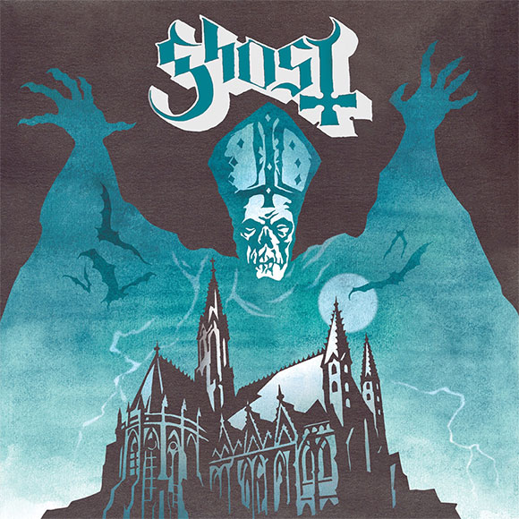
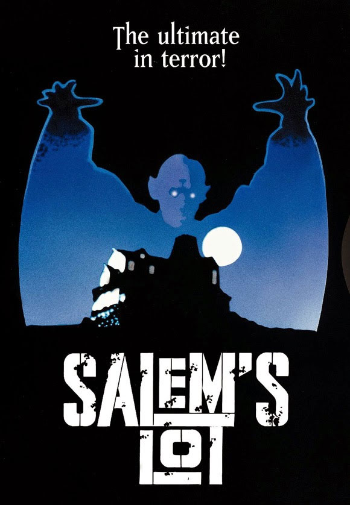
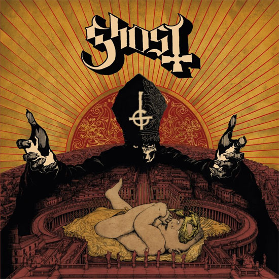
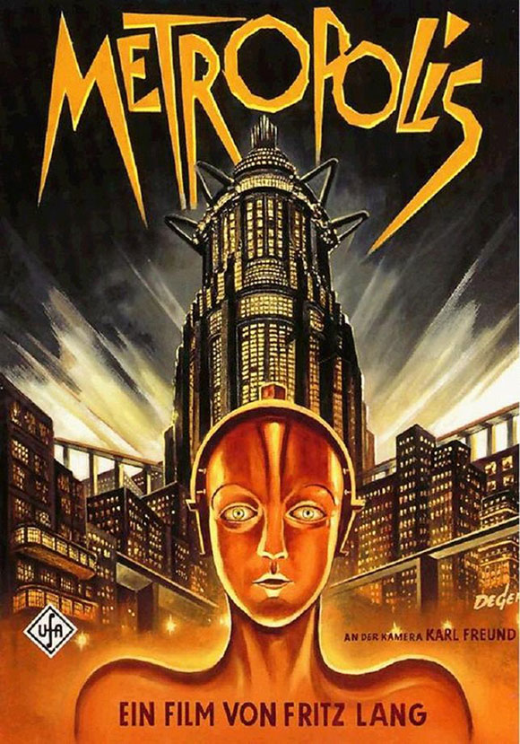
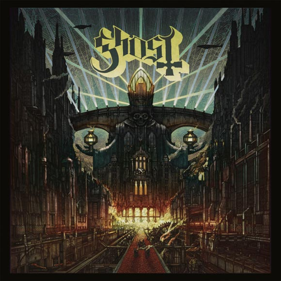

Las portadas de GHOST: El universo visual del Papa Emeritus
Muchas de las ya icónicas portadas y diseños de los suecos GHOST son homenajes a numerosas películas. Repasamos en este reportaje quince de estas referencias al mundo del cine a través del arte de Mattias Frisk, Zbigniew M. Bielak y David M. Brinley han creado para la banda sueca
GHOST es una banda en la que el apartado estético tiene una importante presencia, incluso más de uno afirmará que su imaginario tiene mayor peso que su música. El mundo visual de los rockeros suecos no se ha limitado a los disfraces, las máscaras de sus “nameless ghouls”, el maquillaje del Papa Emeritus o a sus videoclips con reminiscencias setenteras, sino que ha inundado también las portadas de sus discos y singles. Más allá de ser artworks al uso, contienen múltiples guiños al mundo del cine -y no solo de terror- e incluso a otras formas de expresión artísticas, como la pintura. La formación lleva estableciendo un juego con sus fans práctiamente desde su formación en el año 2008. Repasamos algunas de sus referencias.
Opus Eponymous
La primera, y una de las más claras y obvias referencias de GHOST al cine la encontramos en su álbum de debut, “Opus Eponymous”, editado en 2010. Su ya icónica portada elaborada por Basilevs 254 es un evidente homenaje a “El Misterio de Salem’s Lot” (“Salem’s Lot”, 1979), una película para televisión dirigida por Tobe Hooper y basada en la novela de Stephen King. La portada adapta la presencia del monstruoso líder vampiro Kurt Barlow según aparecía en el cartel de la versión estrenada en cines (en España también pudimos disfrutarla como miniserie televisiva).
 Infestissumam
En la portada de “Infestissumam”, álbum lanzado en 2013, el artista Zbigniew M. Bielak versiona el cartel de la película “Amadeus”, dirigida por Miloš Forman y estrenada en 1984. El filme, que cuenta la vida del compositor Wolfgang Amadeus Mozart narrada por su rival (en la cinta) Antonio Salieri, tiene un poderoso cartel que fue adaptado de forma blasfema para GHOST: El Papa Emeritus acoge el nacimiento del anticristo en la Plaza de San Pedro del Vaticano.
 Meliora
Zbigniew M. Bielak regresa para “Meliora” con esta interpretación de “Metrópolis” (“Metropolis”, 1927) de Fritz Lang, volviendo al expresionismo alemán. Además, GHOST aprovecha para lanzar diversos singles con artworks de David M. Brinley inspirados de nuevo por la cartelería de cine.
